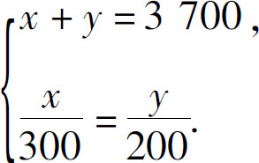

二元一次方程有什么实际用处吗？不管是在工作学习中还是在生活中，不管是赚钱时还是消费时，这类问题几乎随处可见．不信，你就试试．学习了这么久了，我们也应该出去玩玩了，开车来一趟自驾游怎么样？
假如我们有5000元的预算，准备要出去玩5天，那么这个钱我们应该怎么花呢？你可能会说：“花钱还不容易，用得着二元一次方程吗？”可是我们一共就只有5000元，一路上既要花路费，又要花住宿费、餐费，还得支付景点的门票钱，到底怎么分合适呢？如果没有计划，第一天就把钱花光了，后几天就只能“喝西北风”了，对不对？所以必须要有个计划．
首先，吃饭和住宿，差不多都是固定的钱．假设：住宿一天200元，4天就是800元；吃饭1天100元，5天就是500元，从5000里边把这些钱扣除出去，一共要扣除1300元，还剩3700元，这就是路费和景区的门票．你会问这路费和景区的钱怎么分呢？我们光跑高速不进景区，那不叫自驾游，那叫兜风！如果光进景区不走路，那不就只能围着自己的小区转悠了吗？所以我们的时间大致应该是走一半逛一半．那钱应该怎么分呢，难道是3700元平分成两半吗？不对，因为走路钱花得多，每天就得300元左右；而景区的门票花钱少，大概1天也就平均200元．如果两边时间差不多的话，应该是路费除以300元等于景区的钱除以200元，这样就得到了第一个方程式，同时我们又知道这两部分钱加起来等于剩下的3700．于是就得到了这样一组方程：

现在来求解这个方程组：第二个方程左右两边乘以600，化简一下，得到2x ＝3y ，再把第一个方程左右两边乘以2，得到2x ＋2y ＝7400，3y 替换掉这里的2x ，得到5y ＝7400，消去y 的系数5，得到y ＝1480．
还不错，这些钱够玩几个好一点的景区了，当然这只是一个大概的估算．真要到玩的时候，得选好了景区、定好了路线，景区和路线一旦选好了，就意味着路费和门票的钱都确定了，然后可以反过来细算一下，餐饮住宿费用究竟要怎么分配．这就是二元一次方程在生活中的具体用处．这个问题属于预算问题，解决给你一些钱怎么花费最合理的问题．常用的解决办法就是，先满足最基本的需求，而不是那些最重要的需求；然后再按照一个最合理的比例，去考虑最重要的需求如何满足；最后再把剩余的钱，按比例分配到其他的地方．
接下来，该说点赚钱的事儿了．
假如我们开了一家猪肉店，有一天买进了300千克猪肉，进价是12元一千克，现在要把它卖掉，希望每千克能赚3元钱，这个账目很容易算，只要每千克卖15元就可以了．但是问题在于，我们不能统一定价．因为在市场上，肥肉普遍不受欢迎，大多数人只愿意买瘦肉，为了把肥肉和瘦肉都卖掉，就把瘦肉的价格定得贵两块钱．瘦肉贵了以后，买瘦肉的客户自然会减少一点，买肥肉的客户就会多一点，这样才能把肥肉瘦肉一起卖完．现在我们把肉分出来了，肥肉180千克，瘦肉120千克，请你来定个卖价．这个问题怎么解？我们同样是先假设肥肉x 元／千克，瘦肉y 元／千克．由于瘦肉要贵两元，所以我们就得到了第一个方程：y ＝x ＋2①，另一个方程就是猪肉的总价格：180x ＋120y ＝300×15②．
解这个方程组，我们把方程①直接代入到方程②中得到180x ＋120（x ＋2）＝4500，化简合并得到300x ＋240＝4500，移项得到300x ＝4260，消元得到x ＝14.2，y 比x 大2，所以y ＝16.2．
这是卖肉的时候如何根据利润来调配价格的问题，这类问题属于销售计划的问题．大多数公司每到年底，都要做明年的销售计划，公司的老板往往都会根据自己的感觉定出一个大概的销售收入来，然后要求销售负责人把这个计划的收入任务拆分到各个部门或者各个产品线里面去．虽然老板这个数字是拍脑门定的，但是你要做详细计划的时候就得有条不紊，就需要借助这个多元一次方程组的帮助．当然，做销售计划也不是一次性就能完工的，需要不断调整、不断修正，逐步接近真实的情况．
关于挣钱和花钱的事情，跟一个中学生也没多大关系，我们还是抓紧学习吧．话说期末要放假了，家长给你2500元，让你去报学习班．你需要报英语和历史两个学习班，因为你的历史比英语强一点，学英语的时间应该是学历史的1.5倍，换句话说，你报英语班要用的钱是报历史班的1.5倍，那么，这些钱你应该怎么分配呢？这个问题看起来比卖猪肉简单多了．我们假设学英语需要用x 元，学历史要用y 元，根据总金额不难得出x ＋y ＝2500①，再根据英语班和历史班的比例，得到x ＝1.5y ②，这样一个方程组就得到了．我们把方程②代入方程①，得到1.5y ＋y ＝2500，合并同类项，得到2.5y ＝2500，消元，得到y ＝1000，即学历史用1000元，不难得出学英语的钱数x ＝2500－1000＝1500．
通过上述三个例子，我们发现：无论是在工作、生活中还是在学习中，二元一次方程都是无处不在的．我们每一天的时间是不是都可以用来做两件不同的事儿呢？我们花出去的每一份钱是不是都可以买两种不同的东西呢？我们工作的具体方式方法是不是也可以有两种以上呢？甚至我们和两个朋友之间的亲密关系是不是也需要做一个选择呢？每当遇到这种选择的时候，很多宣传心灵鸡汤的人都只告诉我们，应该问问哪一个选择才真正符合你的意愿．其实，当你面临两个相互冲突的选择的时候，背后都有一个隐藏的规律．只要你把它找出来，列个方程组，问题就可以迎刃而解了．
生活中的二元一次方程组就讲到这里，接下来学习数学应用题的解题思路，它可以让我们以不变应万变地解决所有难题．